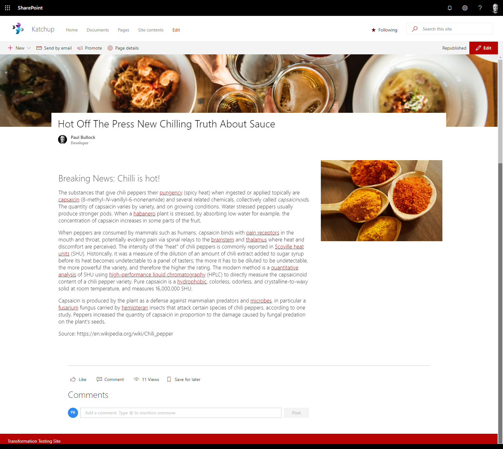

Modernizing classic pages from on-premises sites
Summary
This is a Modernizing classic pages from publishing sites example to show the conversion of an on-premises 2013 publishing page over to SharePoint Online modern sites - this includes the extraction of the mapping files and conversion process.

#-----------------------------
# Publishing Portal Commands
#-----------------------------
$sp13Conn = Connect-PnPOnline http://portal2013/en -Credentials OnPrem -ReturnConnection
$spOnlineConn = Connect-PnPOnline https://contoso.sharepoint.com/sites/PnPKatchup -Credentials Online -ReturnConnection
# Exporting Page Layout File
#------------------------------
# Example based on a page
Export-PnPClientSidePageMapping `
-CustomPageLayoutMapping `
-PublishingPage "Quality-Cherry-Cake.aspx" `
-Folder "C:\temp\Demo" `
-Connection $sp13Conn
# Example based to export all the layouts
Export-PnPClientSidePageMapping `
-CustomPageLayoutMapping `
-Folder "C:\temp\Demo" `
-Connection $sp13Conn `
-BuiltInWebPartMapping
# Transforming Page based on Exported Content
#-----------------------------------------------
ConvertTo-PnPClientSidePage -Identity "Quality-Cherry-Cake.aspx" -PublishingPage `
-TargetConnection $spOnlineConn -Connection $sp13Conn `
-Overwrite `
-PageLayoutMapping C:\temp\Demo\custompagelayoutmapping-f3629db3-3e4d-48c4-b904-6fffab6dbb65-quality-cherry-cake.xml `
-UserMappingFile C:\temp\Demo\usermapping.csv `
-UrlMappingFile C:\temp\Demo\urlmapping.csv `
-KeepPageCreationModificationInformation `
-DisablePageComments `
-LogType Console
Contributors
| Author(s) |
|---|
| Paul Bullock |
Disclaimer
THESE SAMPLES ARE PROVIDED AS IS WITHOUT WARRANTY OF ANY KIND, EITHER EXPRESS OR IMPLIED, INCLUDING ANY IMPLIED WARRANTIES OF FITNESS FOR A PARTICULAR PURPOSE, MERCHANTABILITY, OR NON-INFRINGEMENT.